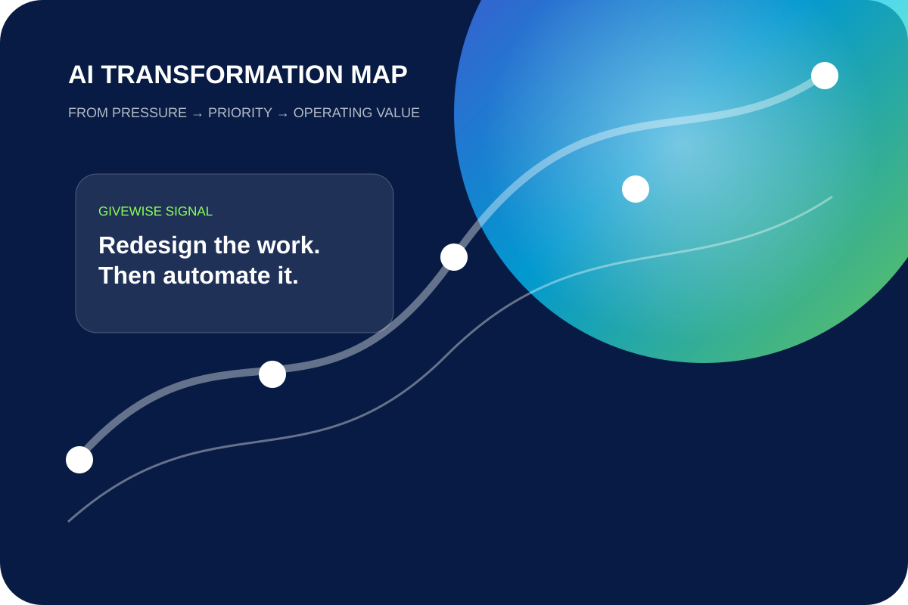
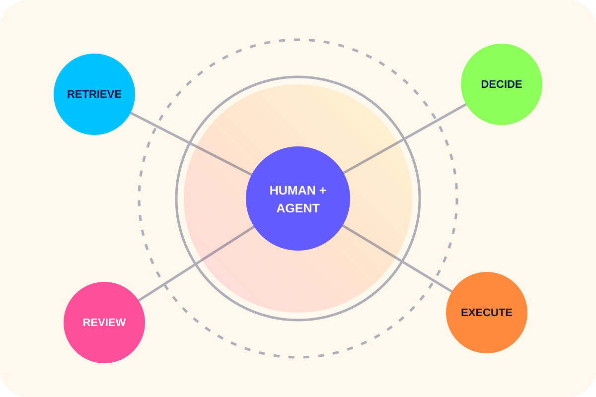
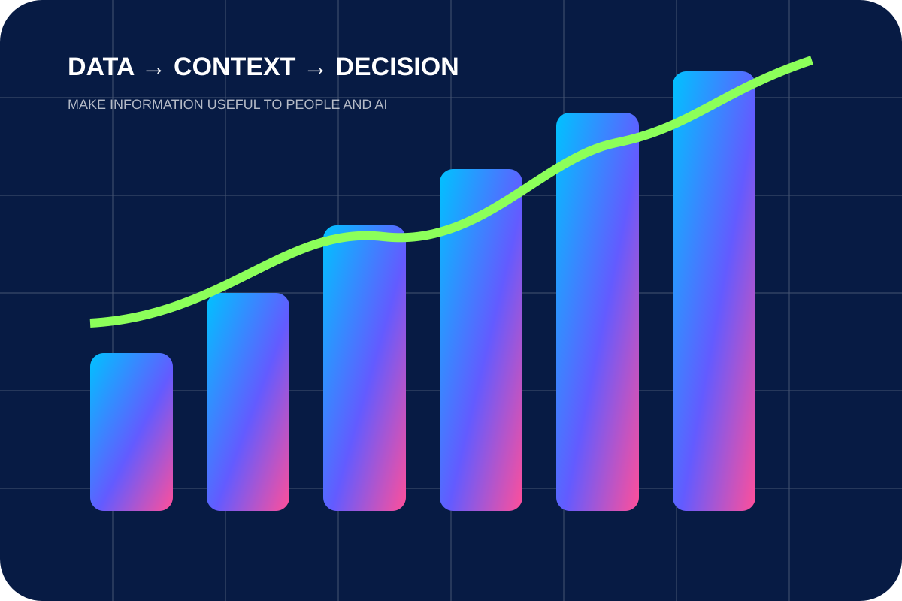
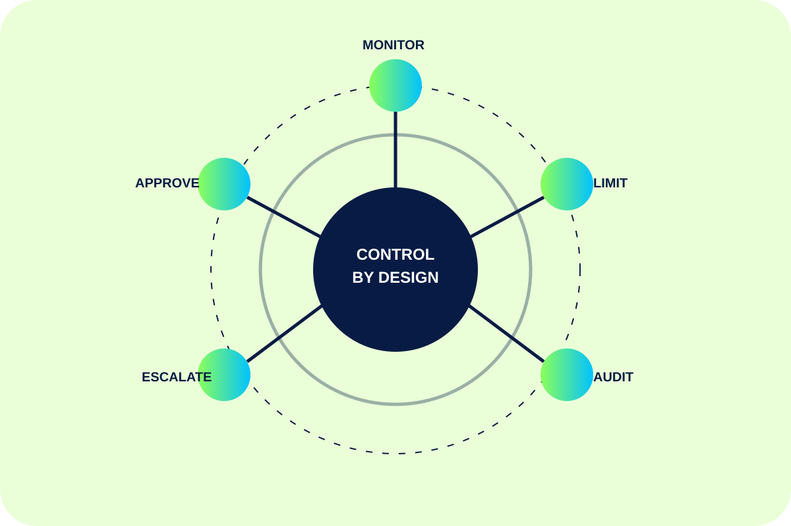

01
AI Transformation Strategy
Prioritize use cases, sequence investment, and define what measurable success should look like.
Givewise helps organizations find the right AI opportunities, redesign the work around them, prepare the data, govern the risk, and turn technology pressure into a clear operating plan.

Access to models is easy. Deciding where AI belongs, connecting it to real work, controlling it, and proving value is not. That is the space Givewise is built for.
Prioritize use cases, sequence investment, and define what measurable success should look like.
Design human-plus-agent workflows with clear boundaries between judgment, approval, and execution.

Make enterprise knowledge accessible, contextual, trustworthy, and useful to AI systems.

Build autonomy limits, monitoring, auditability, escalation, and security into the operating model.

Align cloud, architecture, vendors, security, and software choices with an AI-enabled operating model—without adding unnecessary complexity.
Talk through a technology decision →We look at the work as a system. The objective is not more AI activity—it is better decisions, faster throughput, stronger controls, and technology that fits the organization around it.
Define the outcome before discussing tools.
Rebuild the workflow around human and machine strengths.
Make data and knowledge ready for reliable use.
Engineer governance before autonomy scales.
Track operating value instead of AI theater.
A pilot can work while the organization around it is not ready to scale. The Givewise diagnostic looks across workflow, data, governance, adoption, and value measurement.
Givewise Insights is a founder-led AI transformation and technology advisory. We help organizations make the tradeoffs visible, connect strategy to technical reality, and decide what should happen next.
Explore the founder’s venture studio ↗AI roadmap. Automation opportunity. Data bottleneck. Governance question. Vendor decision. Modernization plan.
Start a conversation →